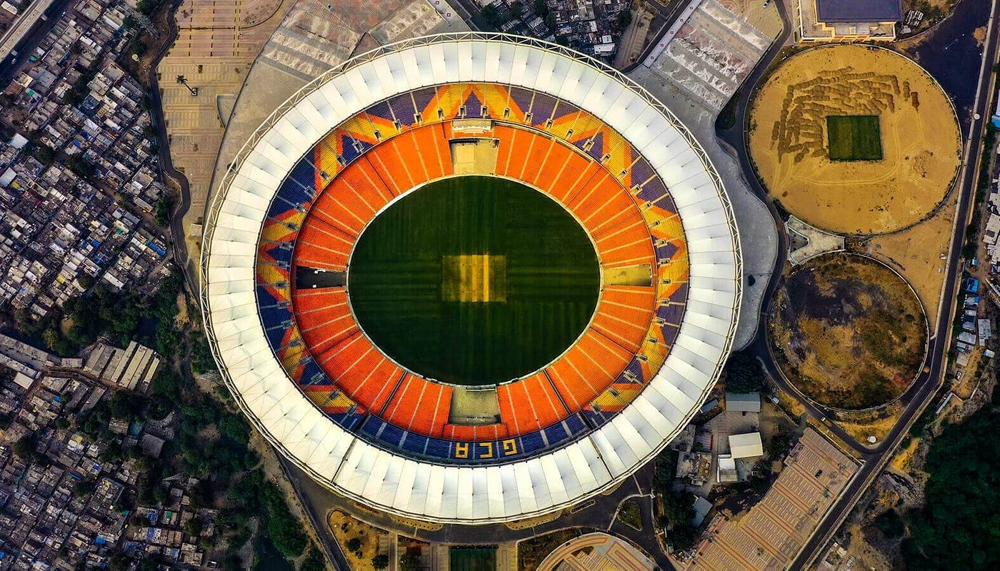

Discover Amdavad
Ahmedabad is India's seventh largest city and the largest in Gujarat, located on the banks of the Sabarmati River in western India. The city is a major center of trade and commerce, and is home to many scientific and educational institutions. Ahmedabad is also known as the financial capital of Gujarat, contributing 14% of India's total stock exchange investments and 60% of the state's productivity.
Experience the vibrant culture and rich history of Amdavad. From bustling markets to serene temples, every corner of the city tells a story.
A place where history and modernity blend seamlessly. Discover the beauty and diversity of our destination through this travel guide.
Home to the largest cricket stadium on the planet
